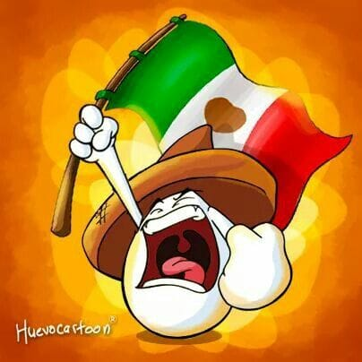

Septiembre es el corazón de las celebraciones mexicanas, un periodo donde el país entero se viste de verde, blanco y rojo para honrar su historia y su identidad.

Mes patrio en México

Septiembre es el corazón de las celebraciones mexicanas, un periodo donde el país entero se viste de verde, blanco y rojo para honrar su historia y su identidad.